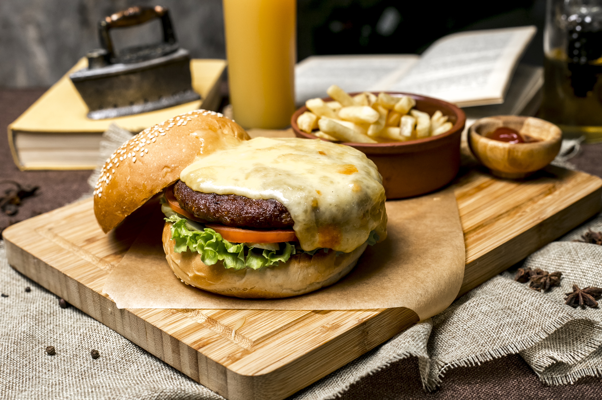

Cheeseburger Classique

Description du plat
Qui n'aime pas un bon burger ? Ce plat offre le goût authentique et parfait du burger américain, préparé à la maison de manière simple et rapide. Un steak de bœuf juteux, saisi à la perfection, surmonté d'une tranche de fromage fondant, le tout niché dans un pain burger moelleux avec une sauce secrète express. Une recette incontournable pour votre site.
Ingrédients
- Viande hachée de bœuf : 500g (de préférence avec 20% de matière grasse pour un steak juteux).
- Pains burger (Buns) : 4 pièces.
- Fromage Cheddar : 4 tranches (spécial burger).
- Assaisonnement : 1/2 cuillère à café de sel, 1/2 cuillère à café de poivre noir
- Garniture : Rondelles de tomates, feuilles de laitue fraîche, rondelles d'oignon (facultatif).
Préparation
- Façonnage des steaks : Divisez la viande hachée en 4 portions égales et formez des disques (un peu plus grands que les pains, car la viande rétrécit à la cuisson).
- Préparation de la sauce : Dans un petit bol, mélangez la mayonnaise, le ketchup et la moutarde jusqu'à obtenir une texture homogène.
- Toaster le pain : Ouvrez les pains burger et faites-les griller côté mie dans une poêle chaude avec un peu de beurre jusqu'à ce qu'ils soient dorés.
- Cuisson de la viande : Dans la même poêle bien chaude à feu vif, assaisonnez les steaks de sel et de poivre, puis déposez-les. Laissez cuire 3 à 4 minutes de chaque côté sans trop les manipuler.
- Le fromage fondant : Une minute avant la fin de la cuisson, déposez une tranche de cheddar sur chaque steak et couvrez la poêle quelques secondes pour faire fondre le fromage.
- Montage du burger : Étalez la sauce sur le pain inférieur, déposez la laitue, la tomate, le steak au fromage fondant, puis refermez avec le pain supérieur. Servez immédiatement !
HOME